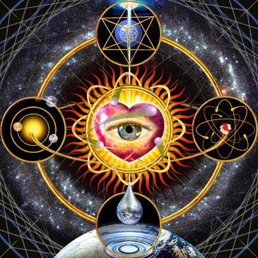
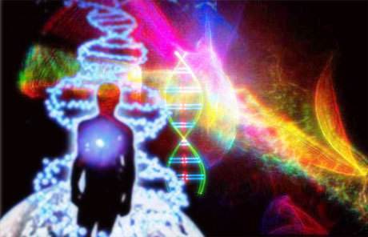
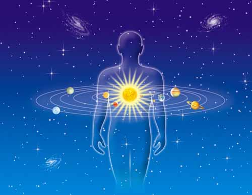
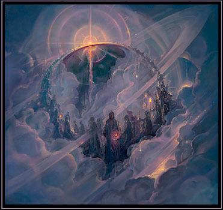

WHAT MAKES UP THE DIFFERENT
DIMENSIONS OF OUR REALITY?
Your physical body exists in the 3rd
dimension - it is matter-based. The
4th dimension is the astral plane - it
is emotion-based. Together these two make up
what we call the Lower Creation World. These
are the dimensions where the game of
separation is carried out. Only in these
dimensions can the illusion of good and evil
be maintained -and can You feel separated
from Spirit and from each other. You've all
became quite good at doing that. Its been a
very successful game of separation but it is
time for it to end. So, this planet is in a
state of ascension. It is now vibrating at
the very top Of the astral plane, right on
the dividing line with the 5th dimension -
the Lightbody dimension. As part of the
ascension process, these dimensions will be
'rolled up into the higher dimensions and
will cease to exist.

________________________________________
The 5th through the 9th dimensions
make up the Mid-Creation Realm.
________________________________________
The 5th is the Lightbody dimension in which you
are aware of yourself as a Master and a
multidimensional being. In the 5th
dimension, you are completely spiritually
oriented. Many of You have came in from this
plane to be Lightworkers.
The 6th dimension holds the templates
for the DNA patterns of all types of
species' creation, including humankind. It
is also where the Light languages are stored
and is made up mostly of colour and tone..
It is the dimension where consciousness
creates through thought and one of the
places where you work during sleep. It can
be difficult to get a bead on this because 1
you are not in a body unless you choose to
create one. Men you are operating
6th-dimensionally, you are more of an alive
thought. You create through your.
consciousness, but you don't necessarily
have a vehicle for that consciousness.
The 7th dimension is that of pure
creativity, pure light, pure tone. pure
geometry, and pure expression. It is a plane
of infinite refinement.
The 8th dimension is of group mind or
group soul and where you would touch base
with the vaster part of who you are. It is
characterized by loss of sense of the "I".
When You travel multi-dimensionally, it is
this plane where you have most trouble
keeping Your consciouness together because
you are pure "we" operating with group
goals. So, it may seem as though you have
gone to sleep or, blanked out., (Ah-ha!)
The 9th dimension in the model that
we use is the plane of the collective
consciousness of planets, star systems,
galaxies, and dimensions. Once again, it is
very difficult to get a sense of "I" because
you are so vast that everything is "you".
Imagine being the consciousness of a galaxy.
Every life-form, every star, - planet, and
group mind of every species in it is you. If
you visit this dimension, it can be
difficult to remain conscious.

________________________________________
The 10th through 12th dimensions
make up the Upper Creation Realm.
________________________________________
The 10th dimension is the source of the Rays,
home of what are called the Elohim. This is
where Light is differentiated and is the
source of plans of creation which are sent
to the MidCreation levels. You can have a
sense of "I" at this level but it won't be
what you are used to here.
The llth dimension is that of
pre-formed Light, the point before creation
and a state of exquisite expectancy just
like the moment before a sneeze or an
orgasm. It is the realm of the being known
as Metatron, and of Archangels and the
Higher Akashic for this Source-system. There
are planetary Akashic records and galactic
Akashics as well as the Akashic for an
entire Source-system. You are in one
Source-system of many. So, we are giving you
a description of one Source-system only -
this one. If you go to another
Source-system, what you will experience will
be different. As an Archangel, my home base
is the 11th dimension. We come to you as
messengers, that is what "Archangel" mans.
It is one of my functions, I have many. I
have an Elohim function which is not very
verbal. We have many, many jobs.
The 12th dimension is the One Point
where all consciousness knows itself to be
utterly one with All That Is. There is no
separation of any kind. If you tap into this
level, you know yourself to be completely
one with All That Is, with the creator
force. If you tap in there, you will never
be the same again because you cannot sustain
the same degree of separation if you have
experienced complete unity.
Spirit creates the illusion of separation up
to the 7th dimension. At higher frequencies,
distinctions become completely meaningless,
and all is Spirit. A definite frequency band
exists in all these levels which acts as a
unifying medium, a common frequency. Just
like the public channel on CB radio, except
that you don't just talk on it, but you are
part of it. If you match your consciousness
to the frequency of this Unity Band, you
experience complete unity with all that is.
It is also known as the Christed Band and
emanates from the Christed level. It throws
off sub-harmonics into all the lower
frequency planes. The energy in the Christed
level is your energy. It is the level at
which you existed as a Christed Being, above
all separateness.
from 'An Ascension Handbook' by Tony Stubbs
2012.com.au/dimensions.html
________________________________________

http://karing4u.blogspot.com/2008/03/different-dimensions-of-our-reality.html